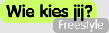

10 stellingen die bepalen welke kandidaat bij u past

zoek een kandidaat door de opties aan en uit te vinken



Hier komen dan percentages te staan

Hier dus nieuws van een kandidaat (of al het nieuws?)

En hier is plaats gereserveerd voor leuke statistiekjes